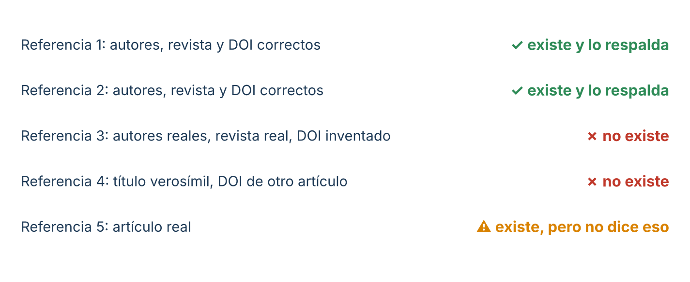
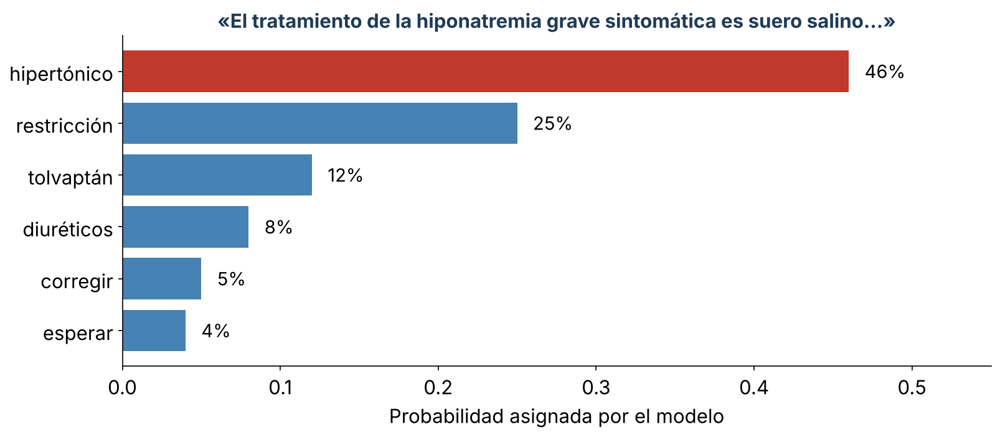
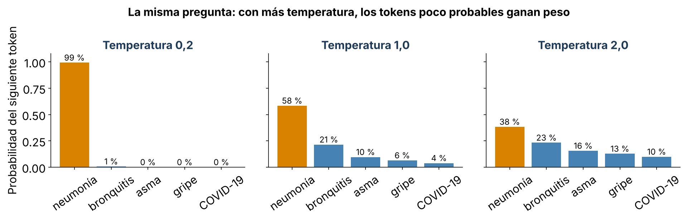
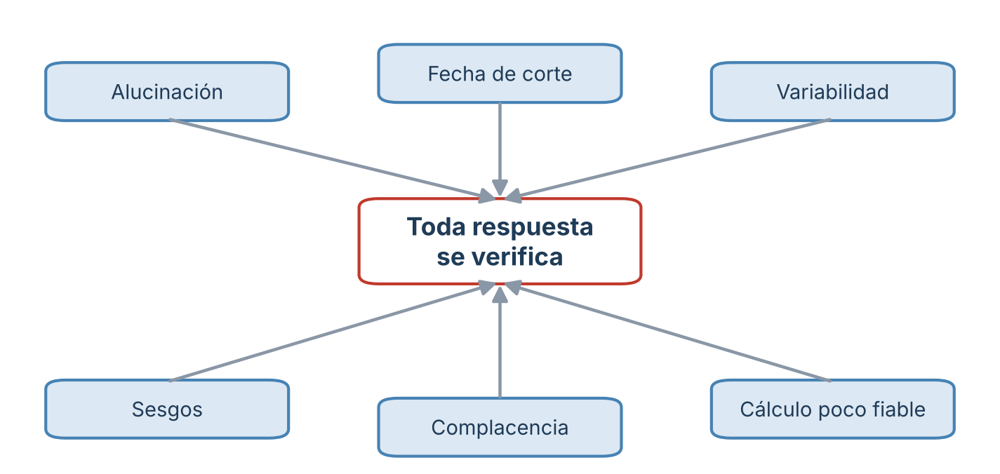
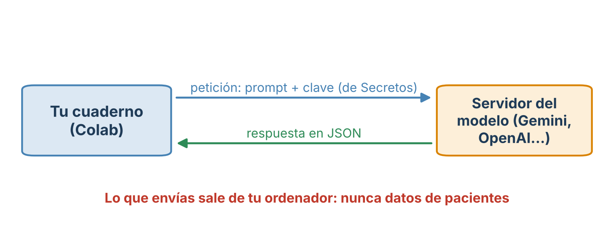

Bioestadística (1964) · Grado en Medicina · Curso 2027-2028
Tema 80Fundamentos de los modelos de lenguaje de gran tamaño: funcionamiento, limitaciones y uso seguro mediante API
Módulo 2. Programando con IA
Fernando Borrás Rocher · Universidad Miguel Hernández de Elche · CC BY 4.0
Objetivos de aprendizaje
Al terminar esta sesión serás capaz de:
- Explicar cómo genera texto un modelo de lenguaje de gran tamaño (LLM): tokens y predicción probabilística de la siguiente palabra.
- Describir el efecto de la temperatura sobre las respuestas.
- Identificar las principales limitaciones de los LLM: alucinaciones, fecha de corte, variabilidad y sesgos.
- Enviar una petición a un modelo mediante su API desde Python, con la clave guardada en Secretos.
- Pedir una respuesta en formato JSON y comprobarla antes de usarla.
- Calcular el consumo de tokens de una petición.
Cómo usar esta presentación
Usa el selector de arriba para dar el tema en una sesión completa o en dos sesiones intercaladas.
🎓 Sesión de clase magistral
- 1. Caso clínico de partida 5 min
- 2. Conceptos clave 10 min
- 5. Autoevaluación 5 min
Explica los conceptos, haz la pausa activa y cierra con las ideas clave.
💻 Sesión de Colab
- 3. Demostración: de la probabilidad a la API 20 min
- 4. Práctica en la app Bioestadística 10 min
- 5. Autoevaluación 5 min
Cada estudiante abre su copia del cuaderno, predice el resultado y después ejecuta la celda.
Teclas: ← → para pasar · N notas del profesor · M cambiar de modo · F pantalla completa · Esc índice.
1. Caso clínico de partida
Cinco referencias con DOI… y dos no existen

- El modelo genera el texto más probable; una referencia plausible lo es, exista o no.
- Todo lo que afirme un modelo de lenguaje se verifica en la fuente.
Pregunta para la clase: ¿Cómo comprobaríais en dos minutos si una referencia existe?
2. Conceptos clave
2.1 Cómo genera texto un LLM
Un LLM predice la siguiente palabra

- El modelo asigna una probabilidad a cada palabra posible y elige una.
- Repite el proceso palabra a palabra: no consulta una base de datos de hechos.
2. Conceptos clave
2.2 La temperatura
La temperatura reparte la probabilidad
- Temperatura baja: casi siempre la palabra más probable (respuestas estables).
- Temperatura alta: más variedad y más riesgo de incoherencias.
- Ninguna temperatura garantiza que la respuesta sea verdadera.

2. Conceptos clave
2.3 Limitaciones

| Limitación | Qué significa | Ejemplo clínico |
|---|---|---|
| Alucinación | Genera información falsa con aspecto convincente | Referencias, dosis o estudios inexistentes |
| Fecha de corte | Solo conoce lo que había en sus datos de entrenamiento | Desconoce una guía clínica publicada después |
| Variabilidad | La misma pregunta da respuestas distintas | Dos explicaciones contradictorias de una prueba |
| Sesgos | Reproduce los sesgos de los textos con que se entrenó | Peor rendimiento en poblaciones infrarrepresentadas |
| Complacencia | Tiende a dar la razón a quien pregunta | Confirma un diagnóstico erróneo sugerido en la pregunta |
| Cálculo poco fiable | Predice texto, no calcula | Errores en operaciones con varios pasos |
La regla de la asignatura se deriva de todo esto: toda respuesta se verifica.
2. Conceptos clave
2.4 Qué es una API
Una API: tu código habla con el modelo

- Tu programa envía una petición (prompt + clave) y recibe la respuesta en JSON.
- Cada llamada cuesta dinero o cuota, y lo que envías sale de tu ordenador: nunca datos de pacientes.
Pausa activa
Piensa 30 segundos, comenta con quien tienes al lado y vota.
¿Qué hace un modelo de lenguaje al generar una respuesta?
En la sesión de Colab
Lo que acabas de ver se comprueba con datos en el cuaderno del Tema 80.
- Abre el cuaderno y guarda tu copia: Archivo → Guardar una copia en Drive.
- Ejecuta la celda de configuración.
- Ve a la demostración y predice cada resultado antes de ejecutar.
3. Demostración: de la probabilidad a la API
3.1 Un modelo de juguete: elegir la siguiente palabra
▶ En tu cuaderno: 3.1 Un modelo de juguete: elegir la siguiente palabra. Antes de ejecutar, escribe qué esperas obtener.
Simulamos las puntuaciones que un modelo podría asignar a cinco continuaciones posibles de «El paciente refiere dolor torácico de características…». La función softmax convierte las puntuaciones en probabilidades, y la temperatura las divide antes.
import numpy as np
import matplotlib.pyplot as plt
candidatos = ["opresivas", "punzantes", "pleuríticas", "mecánicas", "azules"]
puntuaciones = np.array([4.0, 2.5, 2.0, 1.5, -2.0])
def probabilidades(puntuaciones, temperatura):
"""Softmax con temperatura: convierte puntuaciones en probabilidades."""
z = puntuaciones / temperatura
exp_z = np.exp(z - z.max())
return exp_z / exp_z.sum()
fig, ejes = plt.subplots(1, 3, figsize=(12, 3.5), sharey=True)
for eje, t in zip(ejes, [0.2, 1.0, 2.0]):
eje.bar(candidatos, probabilidades(puntuaciones, t), color="steelblue")
eje.set_title(f"Temperatura {t}")
eje.tick_params(axis="x", rotation=45)
ejes[0].set_ylabel("Probabilidad")
plt.tight_layout()
plt.show()Con temperatura 0,2, «opresivas» acapara casi toda la probabilidad. Con temperatura 2, incluso «azules» tiene alguna posibilidad. Generamos 10 continuaciones con cada temperatura:
rng = np.random.default_rng(seed=80)
for t in [0.2, 1.0, 2.0]:
elegidas = rng.choice(candidatos, size=10, p=probabilidades(puntuaciones, t))
print(f"T = {t}: {', '.join(elegidas)}")3. Demostración: de la probabilidad a la API
3.2 Preparar la conexión con la API
▶ En tu cuaderno: 3.2 Preparar la conexión con la API. Antes de ejecutar, escribe qué esperas obtener.
Usaremos la API de Google Gemini con la biblioteca oficial google-genai. La celda lee la clave de Secretos sin mostrarla. Si no hay clave, el resto del cuaderno usará respuestas de ejemplo.
El nombre del modelo cambia con el tiempo. Si la petición falla porque el modelo no existe, ejecuta la celda de ampliación «Ver los modelos disponibles». Después, cambia la variable MODELO.
%pip install -q google-genai
MODELO = "gemini-2.5-flash"
try:
from google.colab import userdata
from google import genai
from google.genai import types
cliente = genai.Client(api_key=userdata.get("GEMINI_API_KEY"))
print("Conexión preparada con el modelo", MODELO)
except Exception as error:
cliente = None
print("Sin clave o fuera de Colab: se usarán respuestas de ejemplo.", type(error).__name__)3. Demostración: de la probabilidad a la API
3.3 Una función para preguntar
▶ En tu cuaderno: 3.3 Una función para preguntar. Antes de ejecutar, escribe qué esperas obtener.
Encapsulamos la petición en una función (Tema 50). Devuelve el texto y el número de tokens consumidos.
def preguntar(prompt, temperatura=0.2):
"""Envía un prompt al modelo y devuelve (texto, tokens_entrada, tokens_salida)."""
if cliente is None:
return ("[Sin clave configurada: aquí aparecería la respuesta del modelo]",
len(prompt.split()), 0)
respuesta = cliente.models.generate_content(
model=MODELO,
contents=prompt,
config=types.GenerateContentConfig(temperature=temperatura),
)
uso = respuesta.usage_metadata
return respuesta.text, uso.prompt_token_count, uso.candidates_token_count
texto, entrada, salida = preguntar(
"Explica en dos frases cómo se calcula la presión arterial media a partir de la "
"presión sistólica y la diastólica."
)
print(texto)
print(f"\nTokens: {entrada} de entrada y {salida} de salida")Verifica: ¿coincide la fórmula que da el modelo con la del Tema 10? Compruébalo siempre.
3. Demostración: de la probabilidad a la API
3.4 Pedir una respuesta en JSON y comprobarla
▶ En tu cuaderno: 3.4 Pedir una respuesta en JSON y comprobarla. Antes de ejecutar, escribe qué esperas obtener.
Para usar la respuesta en un programa, se pide en un formato estructurado. Después se comprueba con un caso de resultado conocido, como en el Tema 50. Aquí pedimos una clasificación cuyo resultado sabemos de antemano.
import json
prompt = (
"Clasifica la presión arterial 148/92 mmHg según la guía ESH 2023. "
'Responde solo con un JSON con las claves "categoria" y "motivo", sin texto adicional.'
)
if cliente is None:
texto = '{"categoria": "hipertensión grado 1", "motivo": "PAS 140-159 o PAD 90-99"}'
else:
texto, _, _ = preguntar(prompt, temperatura=0)
texto = texto.strip().removeprefix("```json").removesuffix("```").strip()
datos = json.loads(texto)
print(datos)
assert "grado 1" in datos["categoria"].lower(), "La clasificación no coincide con la guía"
print("Respuesta comprobada")Las dos líneas removeprefix/removesuffix limpian una costumbre de muchos modelos: envolver el JSON en marcas de código.
3. Demostración: de la probabilidad a la API
3.5 La misma pregunta, varias respuestas
▶ En tu cuaderno: 3.5 La misma pregunta, varias respuestas. Antes de ejecutar, escribe qué esperas obtener.
Con temperatura alta, repetimos cinco veces la misma pregunta. Si no hay clave, se simulan respuestas para mostrar el efecto.
pregunta = "En una sola palabra, ¿cuál es el síntoma más frecuente de la insuficiencia cardiaca?"
for intento in range(1, 6):
if cliente is None:
texto = rng.choice(["Disnea", "Disnea", "Disnea", "Fatiga", "Edemas"])
else:
texto, _, _ = preguntar(pregunta, temperatura=1.5)
print(f"Intento {intento}: {texto.strip()}")3. Demostración: de la probabilidad a la API
3.6 Detectar una alucinación
▶ En tu cuaderno: 3.6 Detectar una alucinación. Antes de ejecutar, escribe qué esperas obtener.
Pide al modelo referencias bibliográficas y comprueba cada una: busca el DOI en doi.org o el título en PubMed. Anota cuántas existen y dicen lo que el modelo afirma.
texto, _, _ = preguntar(
"Dame tres referencias bibliográficas, con su DOI, sobre la ecuación CKD-EPI 2021 "
"para estimar el filtrado glomerular.",
temperatura=0.7,
)
print(texto)
print("\n→ Verifica cada DOI en https://doi.org antes de usar ninguna referencia.")Ampliación
Ampliación: ver los modelos disponibles
if cliente is not None:
for modelo in cliente.models.list():
if "gemini" in modelo.name:
print(modelo.name)
else:
print("Necesitas una clave configurada para listar los modelos.")Ampliación
Ampliación: la misma petición con OpenAI
Si tienes una clave de OpenAI guardada como OPENAI_API_KEY, la petición equivalente es esta. Comprueba en la documentación de OpenAI el nombre de los modelos disponibles.
%pip install -q openai
try:
from openai import OpenAI
cliente_openai = OpenAI(api_key=userdata.get("OPENAI_API_KEY"))
respuesta = cliente_openai.responses.create(
model="gpt-4.1-mini",
input="Explica en una frase qué es la presión arterial media.",
)
print(respuesta.output_text)
except Exception as error:
print("No se ha podido usar OpenAI:", type(error).__name__)Ampliación
Ampliación: buenas prácticas para escribir un prompt
| Práctica | Ejemplo |
|---|---|
| Dar contexto y rol | «Eres profesor de bioestadística de un grado de Medicina…» |
| Ser específico | «En tres frases», «para estudiantes de segundo curso» |
| Pedir el formato | «Responde en JSON con las claves…» |
| Pedir el razonamiento | «Explica cada paso del cálculo» |
| Pedir que reconozca sus límites | «Si no estás seguro, dilo» |
| No sugerir la respuesta | Evitar «¿Verdad que es una neumonía?» |
Ampliación
Ampliación: errores frecuentes
Escribir la clave en el código en lugar de leerla de Secretos.
Confiar en la respuesta sin verificarla, sobre todo en cifras, dosis y referencias.
Enviar datos de pacientes, aunque parezcan anónimos: edad, fecha y diagnóstico raro pueden bastar para identificar a una persona.
Ignorar los límites del nivel gratuito: si se superan, la API devuelve un error de cuota (código 429). Basta con esperar.
Usar un modelo retirado: los nombres de los modelos cambian; consulta la lista de modelos disponibles.
Analizar el JSON sin limpiarlo cuando el modelo lo envuelve en marcas de código.
4. Práctica en la app Bioestadística
Abre la unidad 80 de la app Bioestadística y completa sus misiones:
- Misión básica (sin asistente): predecir el efecto de la temperatura sobre distribuciones de probabilidad de juguete.
- Misión clínica (con pistas): pedir al modelo que clasifique cinco valores de IMC en JSON. Comprobar cada clasificación con la función del Tema 50.
- Misión reto (con asistente): pedir tres referencias sobre un tema clínico, verificar cada DOI y calcular la proporción de referencias correctas.
Al terminar, exporta el informe de la unidad.
5. Autoevaluación
Responde sin asistente y sin ejecutar código.
5. Autoevaluación
Elige una opción: verás la explicación.
¿Qué hace un modelo de lenguaje al generar una respuesta?
Quieres que el modelo extraiga datos de un texto siempre de la misma forma. ¿Qué temperatura conviene?
Un modelo te da una referencia con un DOI que no existe. ¿Cómo se llama este fenómeno?
¿Dónde debe estar la clave de acceso al usar la API desde Colab?
Una petición consume 120 tokens de entrada y 380 de salida. ¿Cuántos tokens consume en total?
Ideas clave
- Un LLM genera texto prediciendo, token a token, la continuación más probable; no comprueba hechos.
- La temperatura regula la variabilidad: baja para tareas que exigen estabilidad.
- Alucinaciones, fecha de corte, variabilidad, sesgos y complacencia obligan a verificar toda respuesta.
- La API se usa con la clave guardada en Secretos; la respuesta llega en JSON con el texto y los tokens consumidos.
- Una respuesta en JSON se comprueba con casos conocidos antes de usarla.
Glosario
| Término | Definición |
|---|---|
| LLM | Modelo de lenguaje de gran tamaño, entrenado para predecir texto |
| Token | Fragmento de texto con el que trabaja el modelo |
| Prompt | Instrucción o pregunta que se envía al modelo |
| Temperatura | Parámetro que regula la aleatoriedad en la elección de tokens |
| Softmax | Función que convierte puntuaciones en probabilidades que suman 1 |
| Alucinación | Información falsa generada con apariencia verosímil |
| Fecha de corte | Fecha hasta la que llegan los datos de entrenamiento del modelo |
| API | Interfaz que permite a un programa usar un servicio externo |
| Cuota | Límite de peticiones o tokens permitidos en un periodo |
Para saber más
- Documentación de la API de Gemini
- Documentación de la API de OpenAI
- Thirunavukarasu AJ, et al. Large language models in medicine. Nat Med. 2023;29(8):1930-1940. doi:10.1038/s41591-023-02448-8